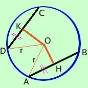
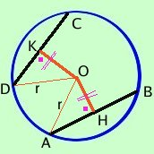

|
Dimostriamo prima che se le corde sono congruenti allora hanno la stessa distanza dal centro e poi dimostreremo che se due corde hanno stessa distanza dal centro allora sono congruenti teorema diretto
 Dimostrazione Dal centro O mando le perpendicolari OH ed OK alle corde che le tagliano a meta' come gia' dimostrato; congiungo il centro O con A e D ed ottengo i triangoli OAH ed ODK; essi sono rettangoli per costruzione ed hanno:
teorema inverso
 Dimostrazione Congiungo il centro O con A e D ed ottengo i triangoli OAH ed ODK; essendo OH ed OK le distanze i due triangoli sono rettangoli essi hanno:
poiche' la perpendicolare dal centro (distanza) taglia a meta' la corda, se le meta' sono congruenti allora saranno congruenti anche le corde intere; come volevamo |

|

|

|

|